The Seaborn library, which is a wrapper around Matplotlib, makes it easier to create “beautiful and readable” statistical charts in the Python language.
Exploratory data analysis (EDA): Seaborn is often used for data visualization during exploratory data analysis, which helps to understand the structure, trends, and relationships between variables in the data. This allows for the identification of patterns, the detection of outliers, and any potential problems with the data.
Visualization of categorical data: Seaborn offers many types of categorical charts, such as bar plots, box plots, violin plots, and point plots. Thanks to this, it is easy to compare values between different categories, which helps to better understand the data.
Visualization of multidimensional data: Seaborn allows you to create charts with many variables at once. Functions such as pairplot and heatmap are useful for analyzing multidimensional data and identifying correlations between variables.
Visualization of statistical distributions: Seaborn enables the creation of histograms, kernel density estimation (KDE) plots, and the empirical cumulative distribution function. With these tools, you can understand the distribution of data, which is essential in statistical analysis and modeling.
Regression visualization: Seaborn offers tools for regression analysis, such as regplot and lmplot. These functions allow for the visualization of the regression line, which makes it easier to understand the relationship between variables and to assess the fit of models.
Creating grids of charts: Seaborn allows you to create grids of charts using functions such as FacetGrid and PairGrid. This makes it easier to analyze and compare data for different subgroups, layers, or combinations of variables.
Customizing charts: Seaborn enables the customization of charts by changing styles, color palettes, and other chart parameters. Thanks to this, you can create attractive and professional-looking data visualizations.
Presentations and reports: Seaborn can be used to create high-quality data visualizations for the purposes of presentations, reports, or scientific publications. The aesthetics and ease of customization of charts make the visualizations created in Seaborn readable and engaging for the audience.
Time analysis: Seaborn can be used to analyze time data, such as time series or seasonal data. Functions such as lineplot or relplot allow for the visualization of trends and any changes in the data over time.
Comparison of models and algorithms: Data visualizations created using Seaborn can be used to compare the results of different machine learning models or algorithms. In this way, you can present the results of an analysis, the quality of classification, estimation, or forecasting.
Teaching and education: Seaborn is often used as a tool for teaching and education, especially in the context of learning statistics, data analysis, and machine learning. Data visualizations make it easier to understand complex concepts and relationships between variables.
41.1 Loading built-in datasets
The sns.load_dataset() function allows you to load built-in datasets in the Seaborn library. All built-in datasets are stored as Pandas DataFrames.
Loading the “iris” dataset:
import seaborn as snsiris_data = sns.load_dataset('iris')print(iris_data.head())
import seaborn as snstitanic_data = sns.load_dataset('titanic')print(titanic_data.head())
survived pclass sex age sibsp parch fare embarked class \
0 0 3 male 22.0 1 0 7.2500 S Third
1 1 1 female 38.0 1 0 71.2833 C First
2 1 3 female 26.0 0 0 7.9250 S Third
3 1 1 female 35.0 1 0 53.1000 S First
4 0 3 male 35.0 0 0 8.0500 S Third
who adult_male deck embark_town alive alone
0 man True NaN Southampton no False
1 woman False C Cherbourg yes False
2 woman False NaN Southampton yes True
3 woman False C Southampton yes False
4 man True NaN Southampton no True
Loading the “tips” dataset:
import seaborn as snstips_data = sns.load_dataset('tips')print(tips_data.head())
total_bill tip sex smoker day time size
0 16.99 1.01 Female No Sun Dinner 2
1 10.34 1.66 Male No Sun Dinner 3
2 21.01 3.50 Male No Sun Dinner 3
3 23.68 3.31 Male No Sun Dinner 2
4 24.59 3.61 Female No Sun Dinner 4
41.2 Scatter plot
import seaborn as snsimport matplotlib.pyplot as plt# Loading the datairis_data = sns.load_dataset('iris')# Creating the scatter plotsns.scatterplot(x='sepal_length', y='sepal_width', data=iris_data)# Adding a title and axis labelsplt.title('Scatter plot of sepal length and width')plt.xlabel('Sepal length (cm)')plt.ylabel('Sepal width (cm)')# Displaying the chartplt.show()
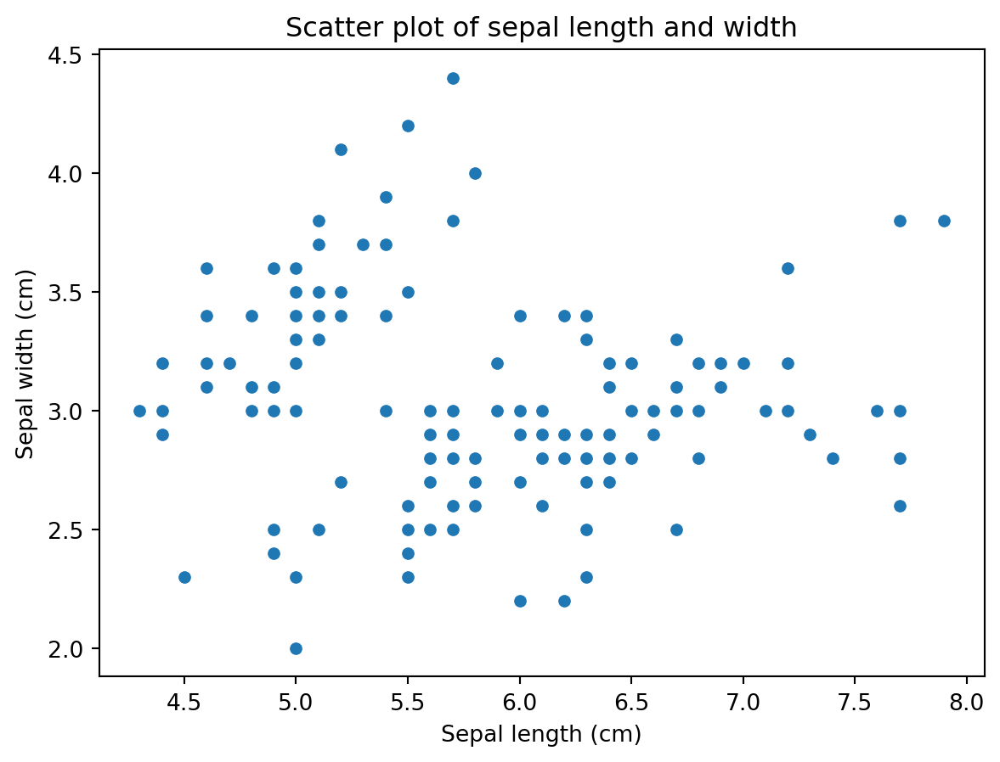
The sns.scatterplot() function offers additional parameters that allow for modifying the chart. Examples include:
The hue parameter: allows you to add coloring of the points based on the values of a categorical variable.
import seaborn as snsimport matplotlib.pyplot as plt# Loading the datairis_data = sns.load_dataset('iris')# Creating a scatter plot with the 'hue' parametersns.scatterplot(x='sepal_length', y='sepal_width', hue='species', data=iris_data)# Adding a title and axis labelsplt.title('Scatter plot of sepal length and width with the hue parameter')plt.xlabel('Sepal length (cm)')plt.ylabel('Sepal width (cm)')# Displaying the chartplt.show()
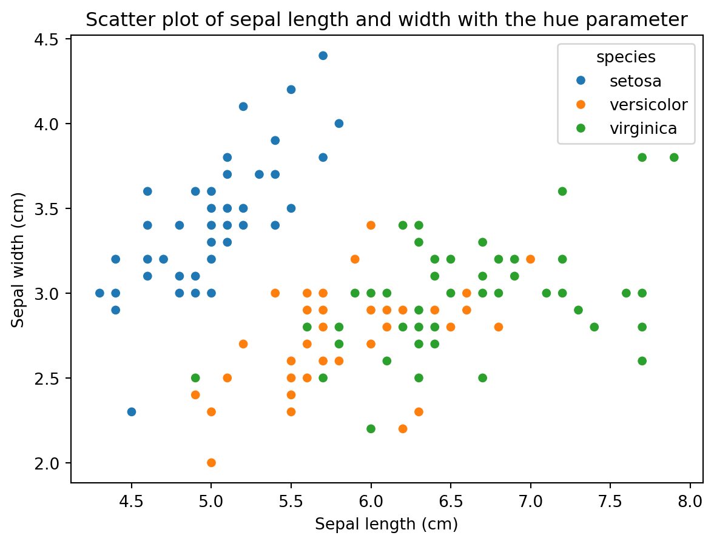
The size parameter: allows you to change the size of the points based on the values of a numeric variable.
import seaborn as snsimport matplotlib.pyplot as plt# Loading the datairis_data = sns.load_dataset('iris')# Creating a scatter plot with the 'size' parametersns.scatterplot(x='sepal_length', y='sepal_width', size='petal_length', data=iris_data)# Adding a title and axis labelsplt.title('Scatter plot of sepal length and width with the size parameter')plt.xlabel('Sepal length (cm)')plt.ylabel('Sepal width (cm)')# Displaying the chartplt.show()
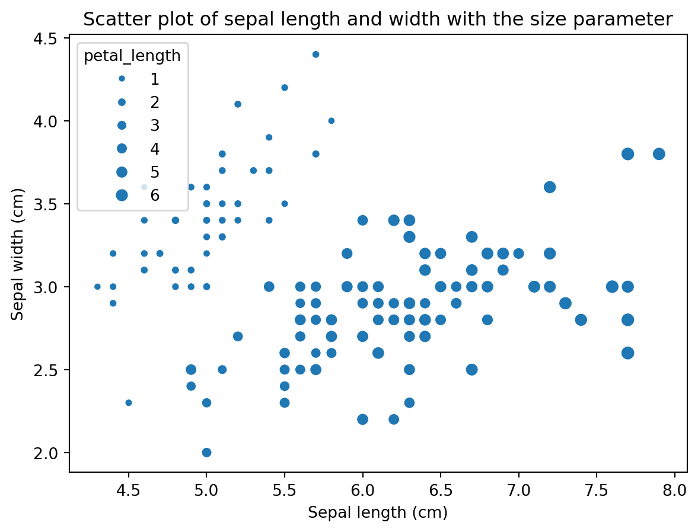
The style parameter: allows you to change the style of the points based on the values of a categorical variable.
import seaborn as snsimport matplotlib.pyplot as plt# Loading the datairis_data = sns.load_dataset('iris')# Creating a scatter plot with the 'size' parametersns.scatterplot(x='sepal_length', y='sepal_width', size='petal_length', data=iris_data)# Adding a title and axis labelsplt.title('Scatter plot of sepal length and width with the size parameter')plt.xlabel('Sepal length (cm)')plt.ylabel('Sepal width (cm)')# Displaying the chartplt.show()
41.3 Line plot
The sns.lineplot() function in the Seaborn library is used to create line plots, which allow for the visualization of the relationship between two variables, especially in the case of time data. A line plot is useful for presenting trends and changes in data over time or another continuous variable.
Here is an example of using the sns.lineplot() function:
import seaborn as snsimport matplotlib.pyplot as plt# Example datadata = {'year': [2010, 2011, 2012, 2013, 2014, 2015, 2016, 2017, 2018, 2019],'value': [100, 110, 105, 120, 130, 140, 150, 170, 180, 200]}# Loading the data as a Pandas DataFrameimport pandas as pddf = pd.DataFrame(data)# Creating the line plotsns.lineplot(x='year', y='value', data=df)# Adding a title and axis labelsplt.title('Line plot example')plt.xlabel('Year')plt.ylabel('Value')# Displaying the chartplt.show()
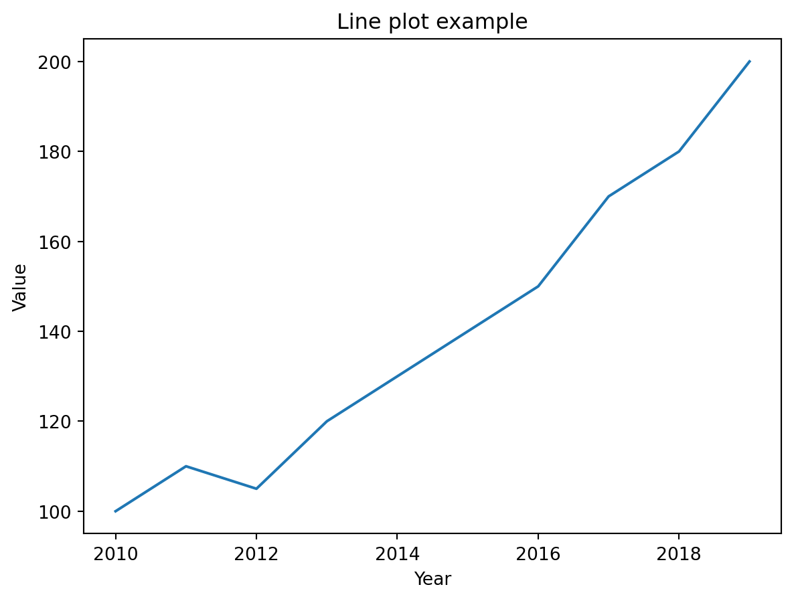
In the example above, we create a line plot based on the DataFrame df. The x and y parameters specify the variables that are to be presented on the chart axes. The data parameter indicates the data source, in this case a Pandas DataFrame.
The sns.lineplot() function offers additional parameters that allow for modifying the chart. Examples include:
The hue parameter: allows you to add coloring of the lines based on the values of a categorical variable.
import seaborn as snsimport matplotlib.pyplot as pltimport pandas as pd# Example datadata = {'year': [2010, 2011, 2012, 2013, 2014, 2015, 2016, 2017, 2018, 2019] *2,'value': [100, 110, 105, 120, 130, 140, 150, 170, 180, 200] + [200, 180, 170, 160, 150, 140, 130, 120, 110, 100],'category': ['A'] *10+ ['B'] *10}# Loading the data as a Pandas DataFramedf = pd.DataFrame(data)# Creating a line plot with the 'hue' parametersns.lineplot(x='year', y='value', hue='category', data=df)# Adding a title and axis labelsplt.title('Line plot example with the hue parameter')plt.xlabel('Year')plt.ylabel('Value')# Displaying the chartplt.show()
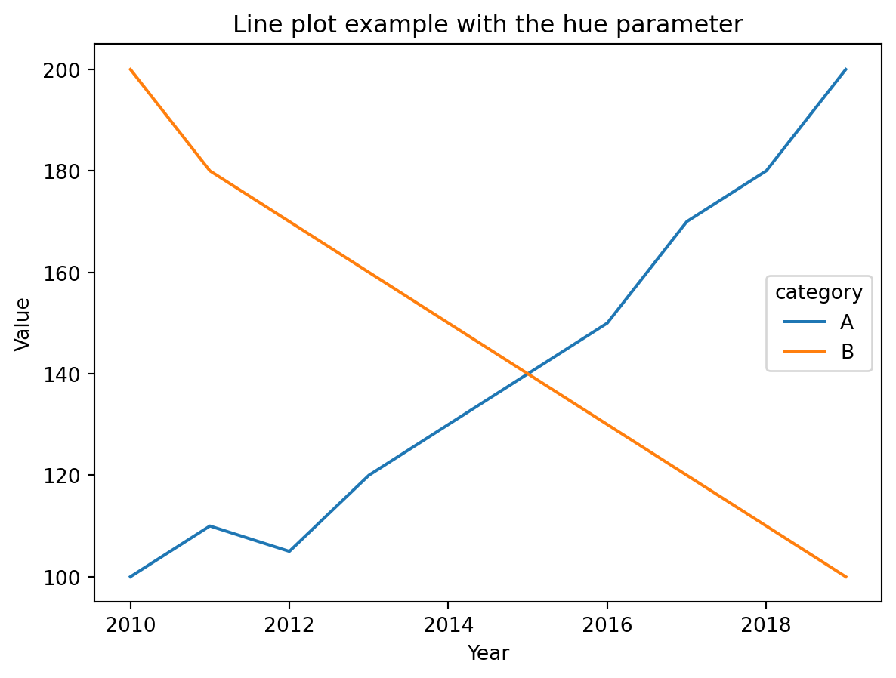
The style parameter: allows you to change the style of the line based on the values of a categorical variable.
The ci parameter: allows you to add a confidence interval to the chart, which can be useful in the case of multiple measurements for the same values on the X axis.
sns.lineplot(x='year', y='value', ci=95, data=df)
41.4 Pie chart
Not directly supported.
41.5 Bar chart
import pandas as pdimport seaborn as snsimport matplotlib.pyplot as plt# Example DataFramedata = {'Category': ['A', 'B', 'C', 'D', 'A', 'B', 'C', 'D'],'Value': [10, 15, 8, 12, 11, 14, 9, 13],'Group': ['X', 'X', 'X', 'X', 'Y', 'Y', 'Y', 'Y']}df = pd.DataFrame(data)
Basic bar chart:
sns.barplot(x='Category', y='Value', data=df)plt.title('Basic bar chart')plt.show()
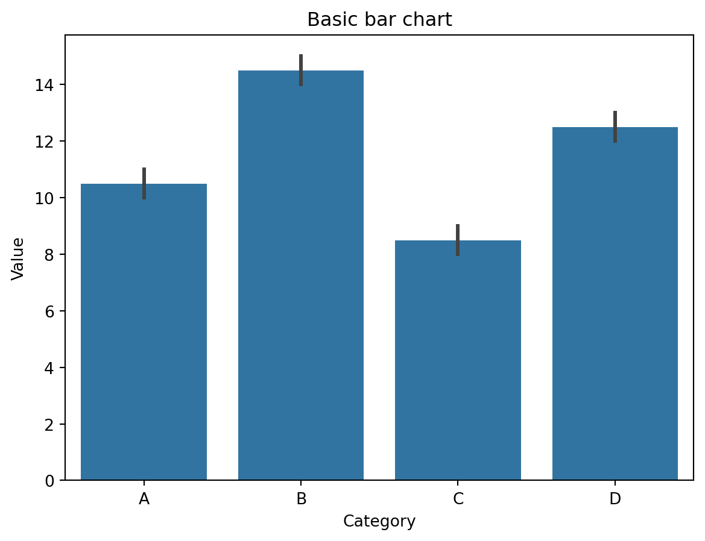
Example with estimator:
sns.barplot(x='Category', y='Value', data=df, estimator=max)plt.title("Bar chart with 'estimator=max'")plt.show()
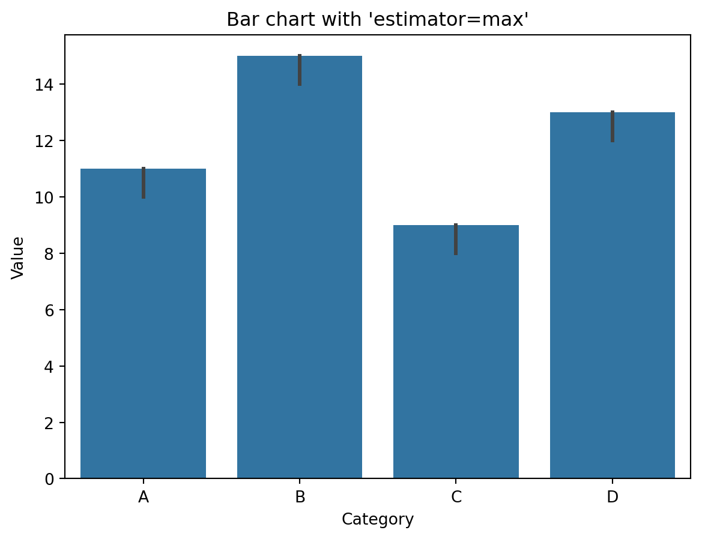
In this example, estimator=max causes the height of the bars to be the maximum value for each category.
Example with errorbar:
sns.barplot(x='Category', y='Value', data=df, errorbar=None)plt.title("Bar chart with 'errorbar=None'")plt.show()
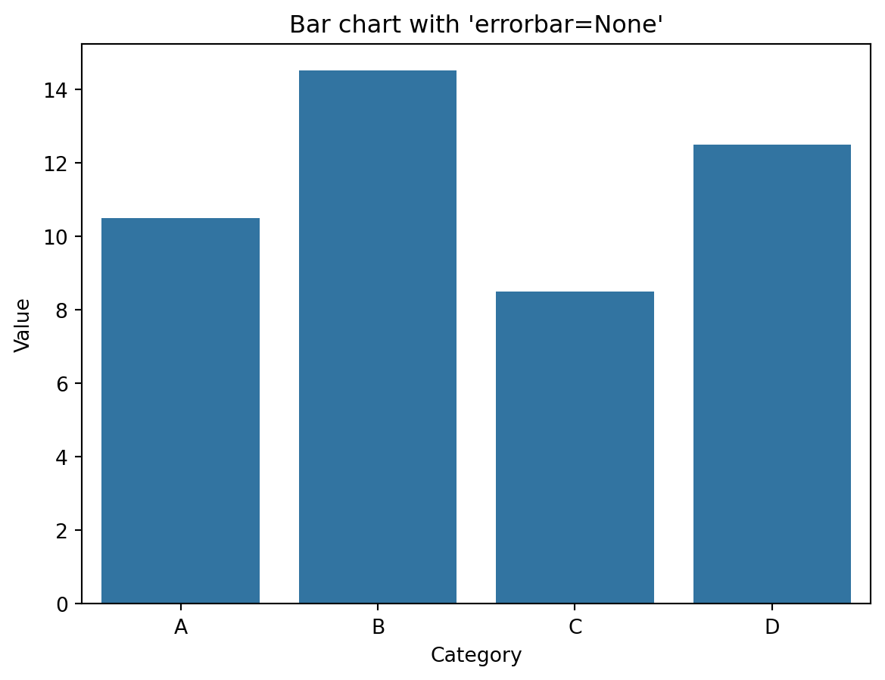
Here, errorbar=None causes the confidence intervals not to be displayed on the chart.
Example with palette:
sns.barplot(x='Category', y='Value', data=df, palette='Greens', hue='Category')plt.title("Bar chart with 'palette=Greens'")plt.show()
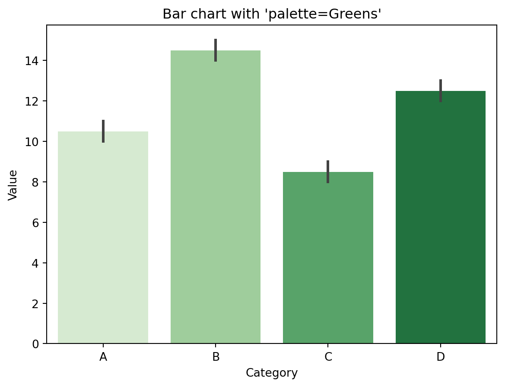
The palette='Greens' argument sets the color palette to shades of green.
Example with hue:
sns.barplot(x='Category', y='Value', hue='Group', data=df)plt.title("Bar chart with 'hue=Group'")plt.show()
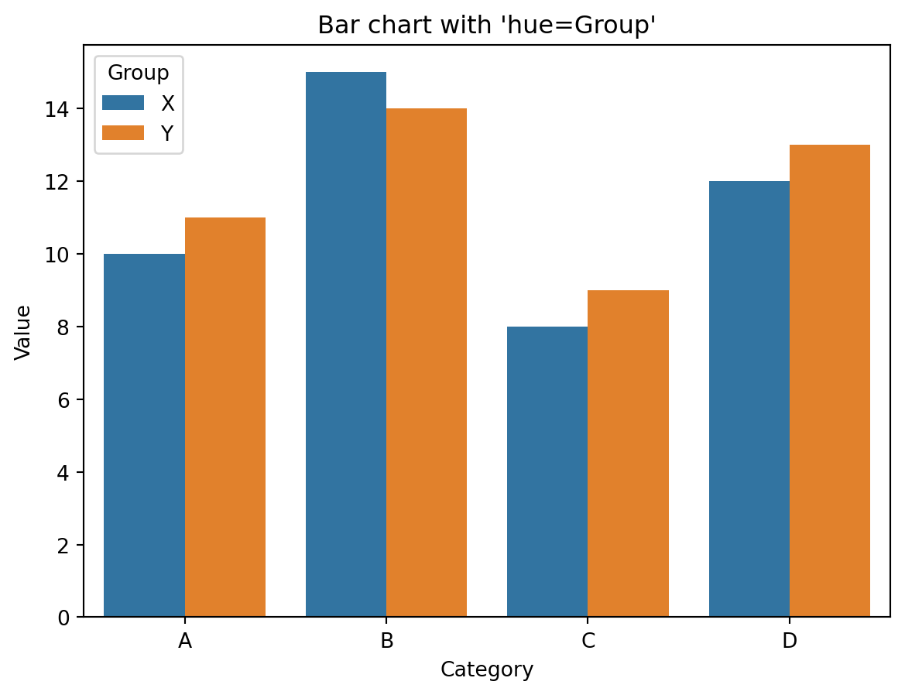
In this example, the hue='Group' argument splits the bars for each category according to the values in the ‘Group’ column.
Example with orient:
sns.barplot(x='Value', y='Category', data=df, orient='h')plt.title("Bar chart with 'orient=h'")plt.show()
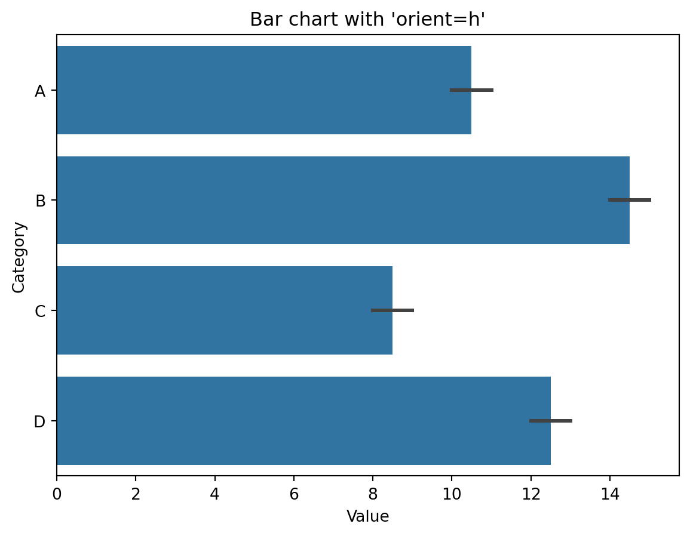
Here, orient='h' changes the orientation of the chart to horizontal.
The order=['B', 'D', 'A', 'C'] argument specifies the order of the categories on the x axis.
41.6 Styles
The Seaborn library allows you to customize the aesthetics of charts using color palettes and styles, which lets you obtain attractive and readable data visualizations. Here are a few examples of how we can customize the aesthetics of charts in Seaborn:
Color palettes:
Color palettes allow you to change the coloring of charts. Seaborn offers several built-in color palettes that can be easily applied to charts.
Example of using the ‘coolwarm’ color palette in a scatter plot:
import seaborn as snsimport matplotlib.pyplot as pltiris_data = sns.load_dataset('iris')# Setting the 'coolwarm' color palettesns.set_palette('coolwarm')sns.scatterplot(x='sepal_length', y='sepal_width', hue='species', data=iris_data)plt.show()
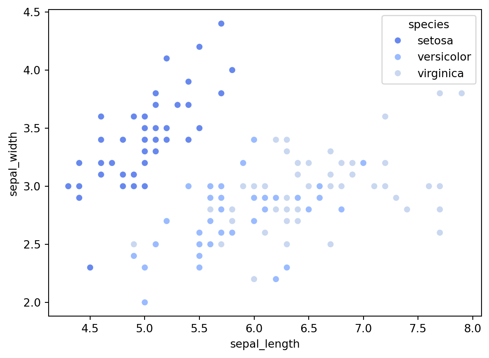
To reset the color palette to the default, use sns.set_palette('deep').
Chart styles:
Seaborn allows you to change the style of charts, which can affect the overall appearance and readability of the visualization. The library offers several built-in styles.
Example of using the ‘whitegrid’ style in a scatter plot:
import seaborn as snsimport matplotlib.pyplot as pltiris_data = sns.load_dataset('iris')# Setting the 'whitegrid' stylesns.set_style('whitegrid')sns.scatterplot(x='sepal_length', y='sepal_width', hue='species', data=iris_data)plt.show()
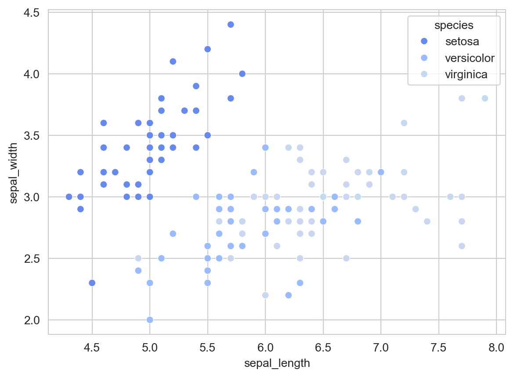
Other available styles are: ‘darkgrid’, ‘white’, ‘ticks’, and ‘dark’. To reset the style to the default, use sns.set_style('darkgrid').
Scaling of graphical elements:
Seaborn allows you to scale graphical elements, which can be useful in the case of different screen resolutions or the need to change the size of charts.
Example of using the ‘poster’ context in a scatter plot:
import seaborn as snsimport matplotlib.pyplot as pltiris_data = sns.load_dataset('iris')# Setting the 'poster' contextsns.set_context('poster')sns.scatterplot(x='sepal_length', y='sepal_width', hue='species', data=iris_data)plt.show()
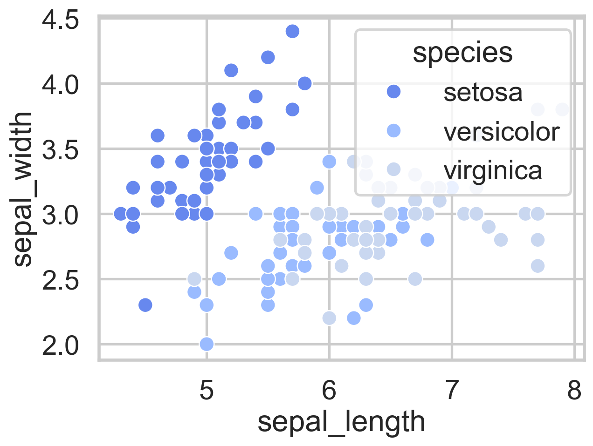
Other available contexts are: ‘paper’, ‘notebook’, and ‘talk’. To reset the context to the default, use sns.set_context('notebook').
By combining these methods, you can create varied, attractive, and readable data visualizations.